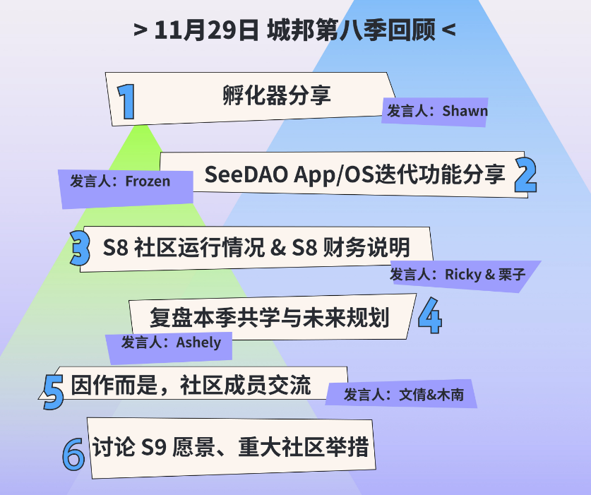
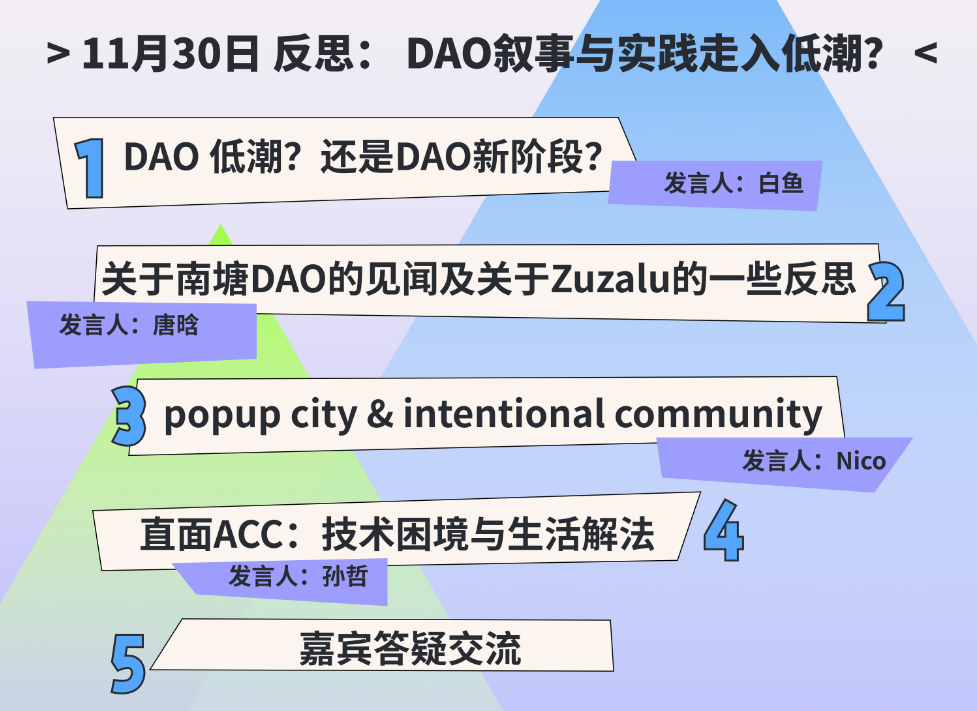
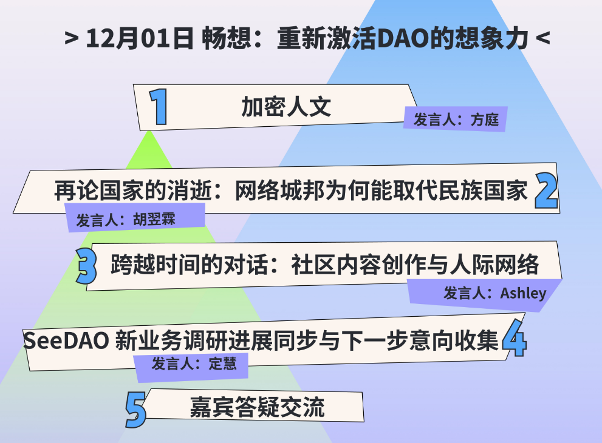
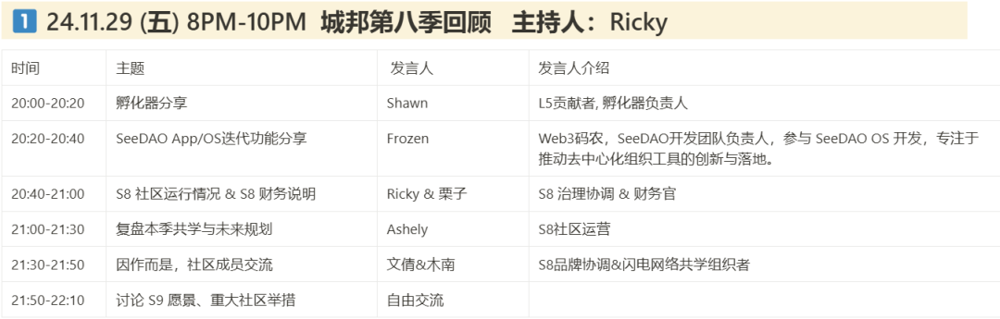
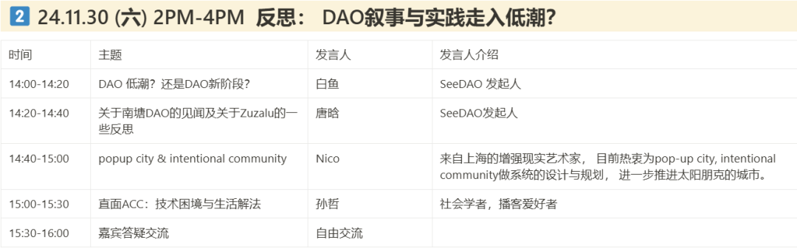
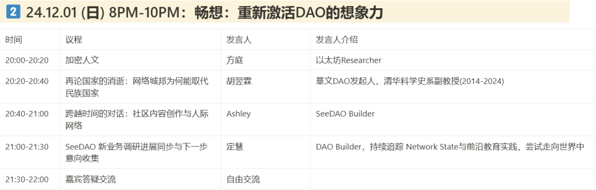

SeeDAO第九届节点共识大会即将召开，3天内容抢先看！
作者: S8市政厅
分类:
DAO, Web3, 数字城邦, SeeDAO, 区块链

亲爱的SeeDAO成员&伙伴们：
第九届节点共识大会将于11月29日（本周五晚上）开始，会议为期三天（11月29日至12月1日）。从今日起，社区将进入节点共识大会的预热周，请大家多多留意相关通知，预留时间踊跃参加社区活动 
11月30日 2PM-4PM
反思: DAO叙事与实践走入低潮？
12月1日 8PM-10PM
畅想：重新激活DAO的想象力



图片：Bo
周末两天「反思与畅想」特邀嘉宾专题交流，嘉宾介绍与分享时间点击👇查看大图



请具备 S9 节点资格者在截止时间前，即日起于节点共识大会网站 Claim 节点资格，Claim 将于2024/11/27 24:00 (UTC+8) 截止。
🔗https://node.seedao.xyz/
如果不清楚自己是否具备节点资格，可在此查询👇：
https://seedao.notion.site/S9-144cab053d3a800ebd9bd6a1896497c5
社区成员可以将自己认为重要的议题、想要发起的公共项目提交给节点共识大会讨论投票。如果你已经有成形的想法，欢迎在Discord联系Ricky（@fatfingererr）或栗子（@lizi2049），协助你将提案加入节点大会的Notion总页的提案展示区，在社区展开讨论~ S9 节点共识大会总页：https://www.notion.so/seedao/140cab053d3a8083a88affda3a7ae373
S9节点大会共计三天（11.29-12.01）议程会在节点大会网站和Notion页动态更新。本次节点大会除了过去一季SeeDAO的社区回顾，我们还在周末两天邀请多位嘉宾进行分享，一起探讨过去几年来DAO探索的得与失，以及我们还能畅想怎样的未来。如果你有心得或议题想要分享，无论是SeeDAO成员或其他社区成员，都欢迎前来报名分享，一起交流对话！（请联系微信：ashes1818）
SeeDAO，See U 让我们相约11月27日晚上(市政厅岗位竞选)；
11月29日晚上(节点共识大会) 线上见~
活动地点：
Zoom会议号: 539 363 9014
密码: seedao